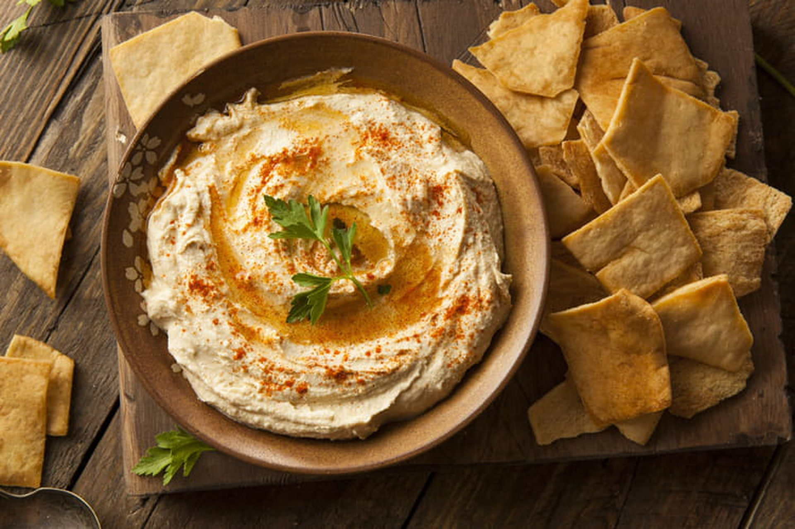

Recette du houmous

Ingrédients :
Préparation :
- Mettre les pois chiches égouttés dans un mixeur. Mixer légèrement en ajoutant un peu d'eau de cuisson.
- Ajouter le tahin, le jus de citron, l'ail, le cumin et le sel.
- Continuer de mixer en incorporant l'huile d'olive petit à petit jusqu'à obtenir une texture homogène et crémeuse.
- Goûter et ajuster l’assaisonnement selon vos préférences.
- Servir frais avec du pain pita ou des légumes crus.
Retour aux entrées